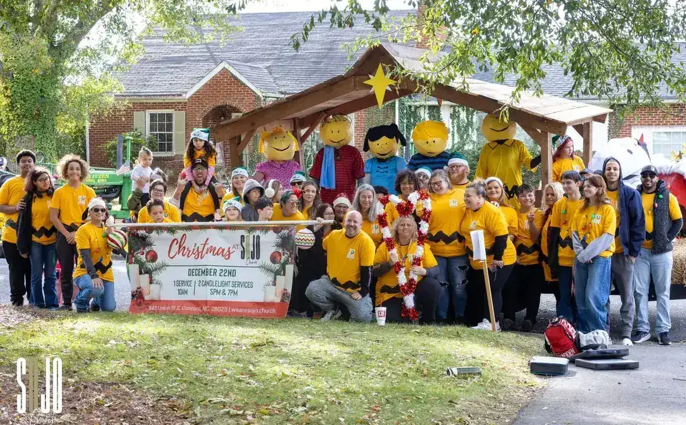
Outreach & Missions
Here.
Near.
Far.
A church that only gets deeper and never gets wider has misread the picture. Ezekiel’s river does not pool inside the temple — it runs out, and everything it touches lives.
GoThis is why we go. Heaven comes to earth in specific places — a street in Concord, a new church in a small town, a child fed and known by name.
The approach
Three rings,
one river
We do not pick between loving our street and reaching the nations. We fund all three, on purpose, every year.
Here is Concord and Gibson Village — the neighbors we can drive to, the schools our kids attend, the first responders who answer our calls.
Near is North Carolina, and it is mostly church planting. New churches reach people existing churches never will, and we would rather help start one than protect our own attendance.
Far is the nations — partners who train leaders, feed and educate children, and go where we cannot, plus a fund so our own people can actually get on a plane.
If we shut our doors tomorrow, our community should miss us. This page is where that stops being a slogan and starts being a line item.
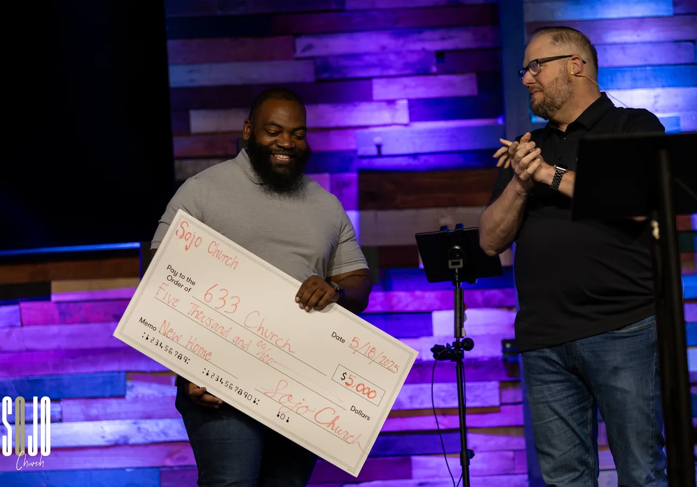
Generosity, handed to somebody who needed it
Here
Concord &
Gibson Village
The neighbors we can drive to.
Our here is the block, not an abstraction. Food for families who run short before the month does. Bibles into hands that never had one. Care for people in recovery and people in crisis. Packing events where a few hundred of us do something with our hands instead of talking about it.
Gibson Village is the neighborhood we just moved into — and moving in comes with obligations. We intend to be the kind of neighbor the Village would notice if we left.
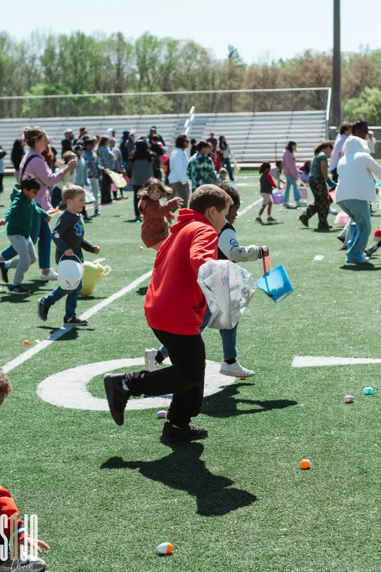
Who we stand with
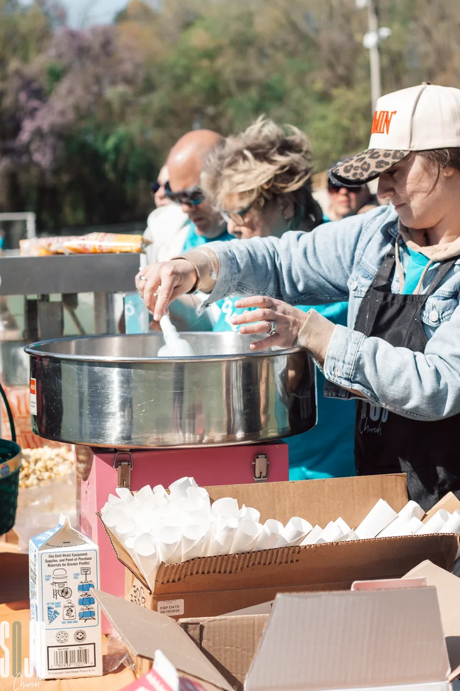
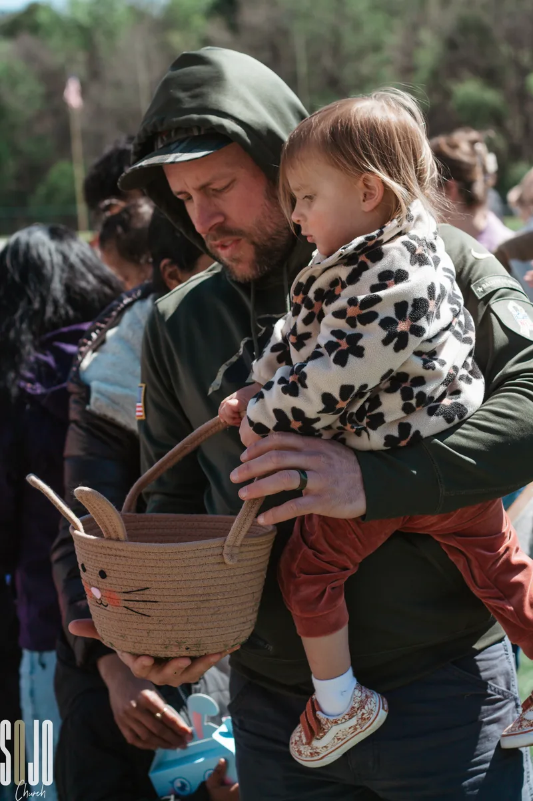
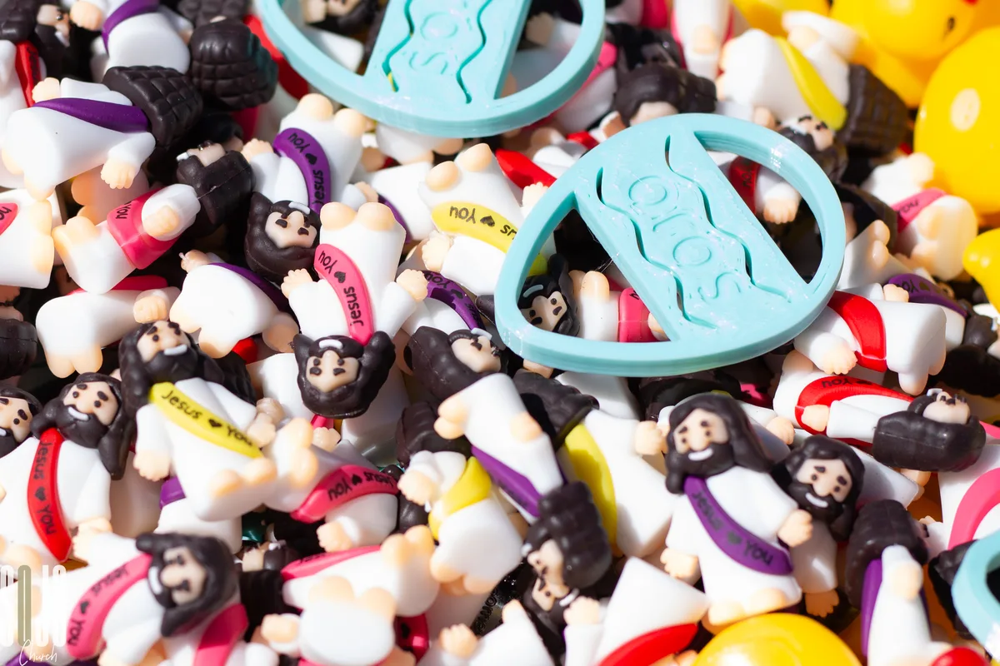
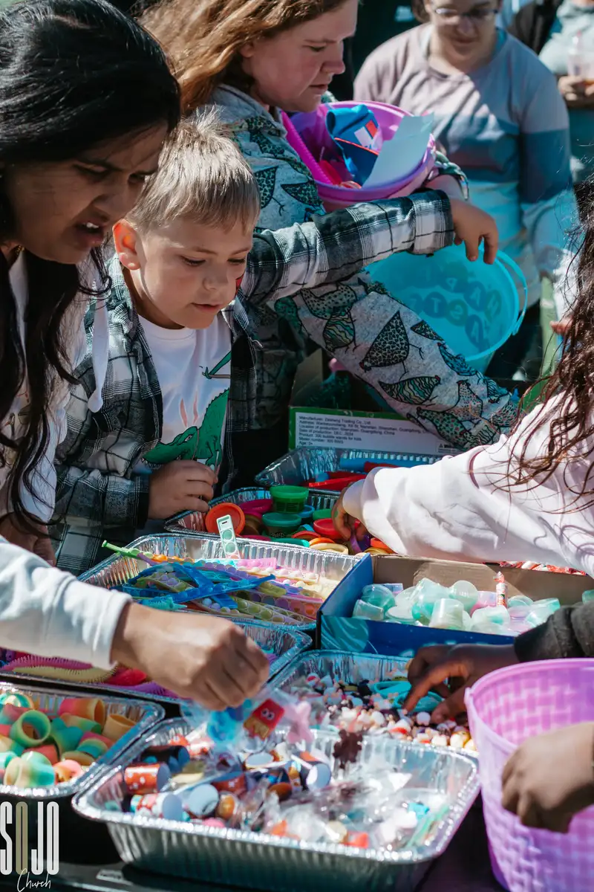
Near
Churches we
help plant
Mostly North Carolina, and mostly church planting — because new churches reach people we never will.
A church that will not help start other churches has quietly decided it is the point. We are not the point.
So a real share of what you give leaves this building and lands in rooms we will never sit in — a plant down the road in Concord, a coastal church in Shallotte, a ministry in Charlotte, a work all the way out in San Diego. Pastors we may only meet twice. That is not generosity leaking out. That is generosity working.
Who we stand with
Far
The
Nations
One church planted every month — and a fund so our own people can go too.
Far is the ring most churches talk about and fewest actually fund. We fund it.
Through The Timothy Initiative we are planting one church a month — twelve a year, in villages we will never visit, led by people we will never meet. TTI trains national leaders where they already live, so the church that gets planted is not a foreign import; it is somebody’s neighbor.
Add children fed, educated and known by name, and gospel work in places that never show up on a Sunday morning here. And a Mission Trip Fund on the books, because sending money is good and sending people changes both ends of the trip.
Who we stand with
Two doors down
Our neighbor
at the Mill
Lifeline Charlotte Centre packs meals for hungry families out of Suite 175 at Gibson Mill — two doors down from us in Suite 148.
Same hallway. A Christian meal-packing facility where anybody of any age or ability can show up and put food in a box that ends up in front of a hungry student, a refugee family, or a community digging out from a storm.
We did not plan that. We are going to make the most of it.
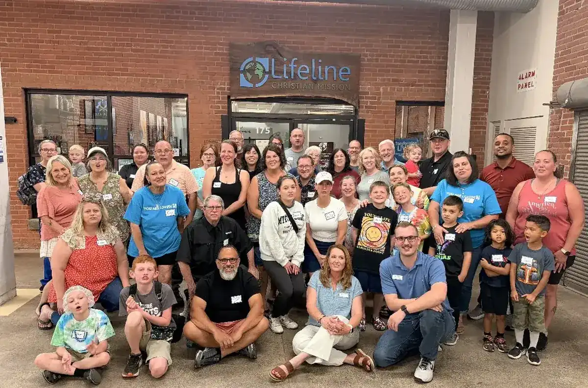
SOJO at Lifeline · Suite 175, Gibson Mill
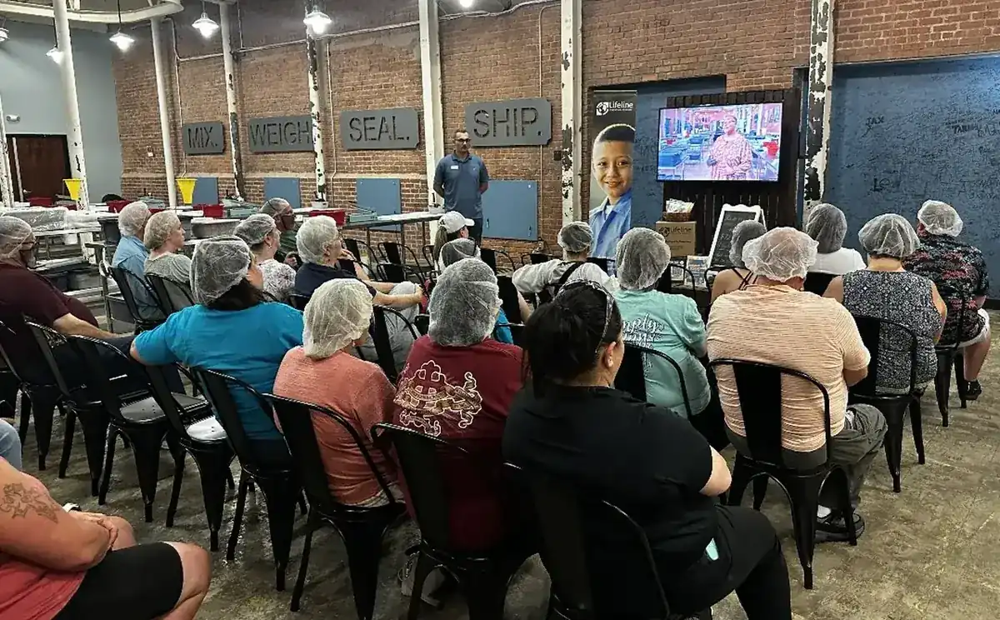
Mix. Weigh. Seal. Ship.Every packing day starts with a briefing and a look at who the food is going to.
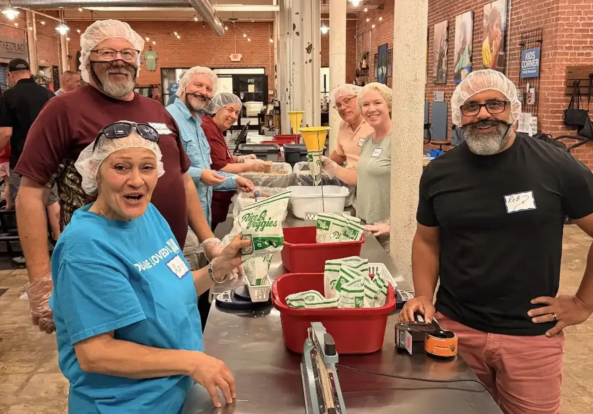
On the lineRice and veggies, weighed, sealed and boxed by hand.
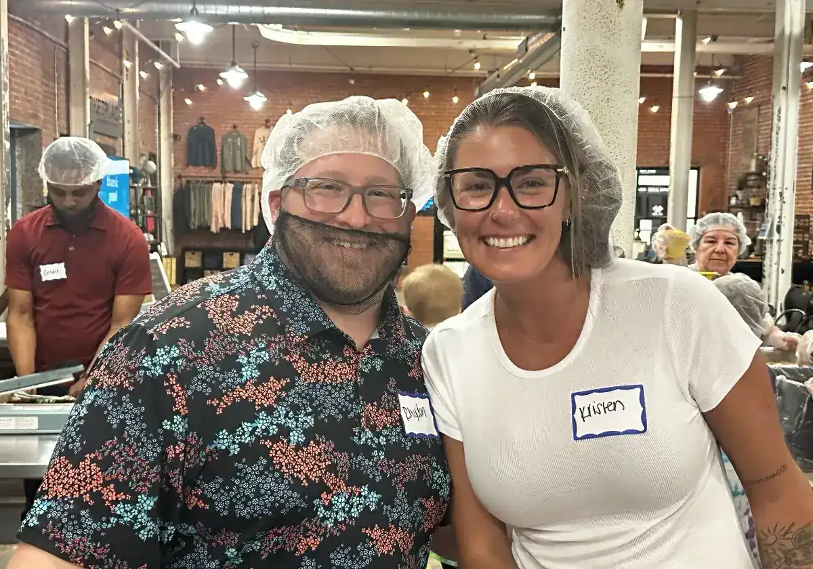
Hairnets requiredNo skill needed. Show up, put one on, get to work.
The whole picture
What it adds
up to
Every one of these is funded, on purpose, every year — before a single unbudgeted need walks through the door.
Nobody at SOJO gives to a budget. But when you give here, a real share of it leaves this building on purpose — and one of those months, somewhere, a church starts that would not have.
Your part
Three ways
in
Serve locally
Meals on Wheels every Tuesday, HellFighters, packing events, and serve days across Concord and Gibson Village. You do not need a skill set. You need a calendar.
Give
Every dollar of this page is funded by people who decided their money should do more than survive. Generosity is the engine under all three rings.
Go
The Mission Trip Fund exists so cost is not the reason you stayed home. Ask us where the next team is headed.
Here, near, and far
It all starts
with here
The nations are not more spiritual than your street. Start with the one in front of you.